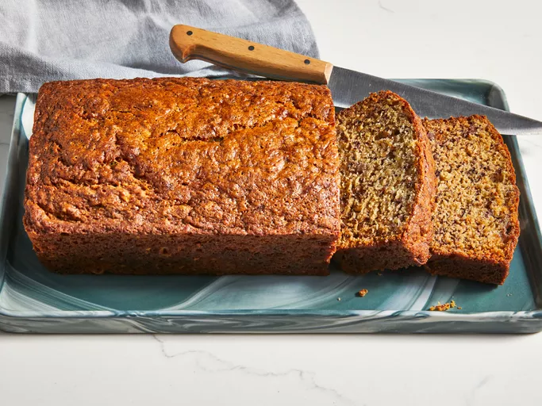

Joy's Easy Banana Bread

Description
A delicous and easy recipe for banana bread with cheap ingredients you likely have lying around.
This banana bread takes about one hour to make and will make about 10 servings.
Ingredients
- Three ripe, mashed bananas
- Half a stick of melted butter
- All-purpose flour
- Sugar
- An egg
- Baking soda
- Salt
Steps
- Combine the dry ingredients in one bowl and the wet ingredients in another.
- Stir the dry mixture into the wet mixture.
- Pour the batter into a prepared loafpan and bake.
Credit for this recipe goes to Joy on allrecipes.com